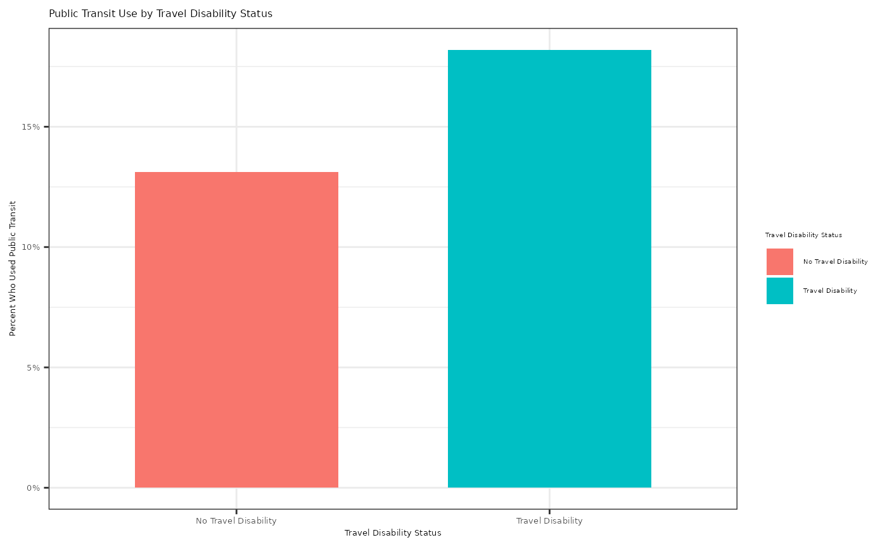

Exploratory Data Analysis Example
This example uses the person dataset to explore public
transit use by travel disability status. The main question is whether
individuals who have a travel disability report using public transit in
the last month at different rates than individuals who do not have a
travel disability.
#> Create readable labels for travel disability status and public transit use
person_transit <- person |>
mutate(
travel_disability_group = case_when(
travel_disability == "No_disability" ~ "No Travel Disability",
TRUE ~ "Travel Disability"
),
public_transit_status = case_when(
count_of_public_transit_usage > 0 ~ "Used Public Transit",
TRUE ~ "Did Not Use Public Transit"
)
)
#> Sort labels
person_transit$travel_disability_sort_val <- factor(person_transit$travel_disability_group, levels = c("No Travel Disability", "Travel Disability"))
person_transit$public_transit_sort_val <- factor(person_transit$public_transit_status, levels = c("Did Not Use Public Transit", "Used Public Transit"))
#> Summary statistics of public transit use by travel disability status
transit_summary <- person_transit |>
group_by(travel_disability_sort_val) |>
summarize(
people = n(),
public_transit_users = sum(count_of_public_transit_usage > 0),
public_transit_use_prop = mean(count_of_public_transit_usage > 0),
public_transit_usage_median = median(count_of_public_transit_usage),
public_transit_usage_mean = mean(count_of_public_transit_usage),
public_transit_usage_sd = sd(count_of_public_transit_usage)
)
transit_summary
#> # A tibble: 2 × 7
#> travel_disability_sort_val people public_transit_users public_transit_use_prop
#> <fct> <int> <int> <dbl>
#> 1 No Travel Disability 92897 12190 0.131
#> 2 Travel Disability 6667 1213 0.182
#> # ℹ 3 more variables: public_transit_usage_median <dbl>,
#> # public_transit_usage_mean <dbl>, public_transit_usage_sd <dbl>
#> Plot Public Transit Use by Travel Disability Status
person_transit |>
count(travel_disability_sort_val, public_transit_sort_val) |>
group_by(travel_disability_sort_val) |>
mutate(public_transit_use_prop = n / sum(n)) |>
filter(public_transit_sort_val == "Used Public Transit") |>
ggplot(aes(x = travel_disability_sort_val,
y = public_transit_use_prop,
fill = travel_disability_sort_val)) +
geom_col(width = 0.65) +
scale_y_continuous(labels = function(x) paste0(round(100 * x), "%")) +
labs(title = "Public Transit Use by Travel Disability Status",
x = "Travel Disability Status",
y = "Percent Who Used Public Transit",
fill = "Travel Disability Status") +
theme_bw() +
theme(axis.text = element_text(size = 5),
axis.title = element_text(size = 5),
title = element_text(size = 5),
legend.text = element_text(size = 4),
legend.title = element_text(size = 4))
#> Test whether public transit use differs by travel disability status
prop.test(
x = transit_summary$public_transit_users,
n = transit_summary$people
)
#>
#> 2-sample test for equality of proportions with continuity correction
#>
#> data: transit_summary$public_transit_users out of transit_summary$people
#> X-squared = 136.93, df = 1, p-value < 2.2e-16
#> alternative hypothesis: two.sided
#> 95 percent confidence interval:
#> -0.06031243 -0.04112818
#> sample estimates:
#> prop 1 prop 2
#> 0.1312206 0.1819409